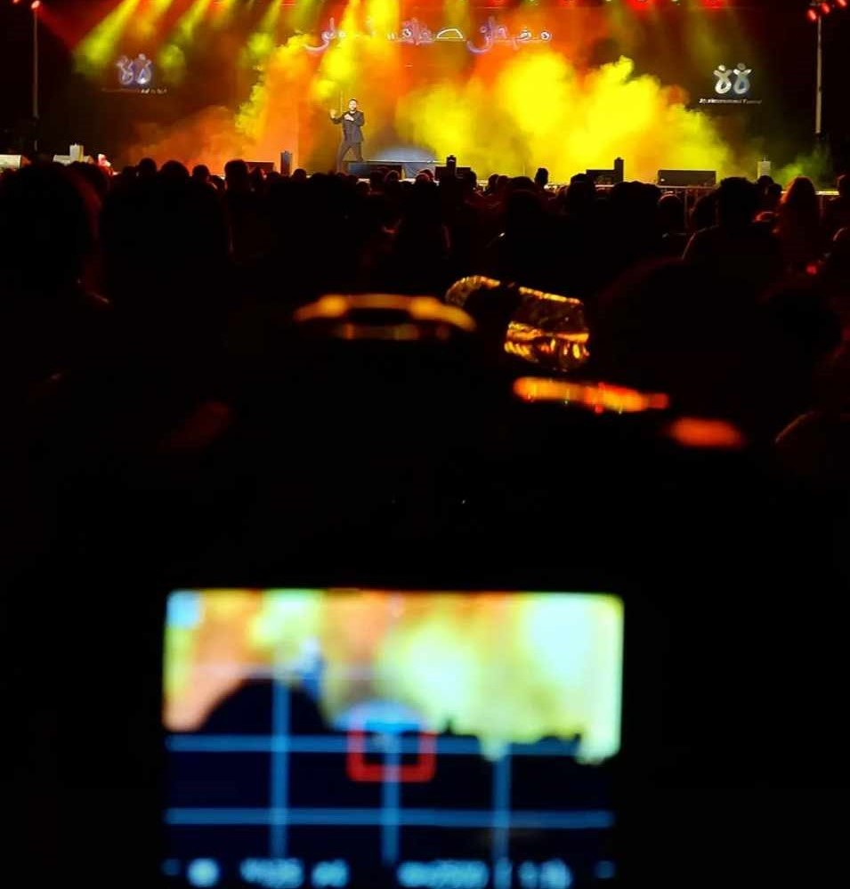
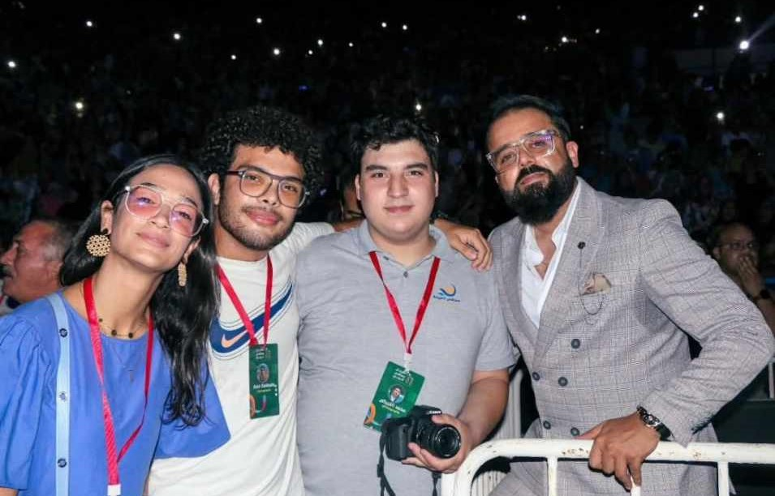
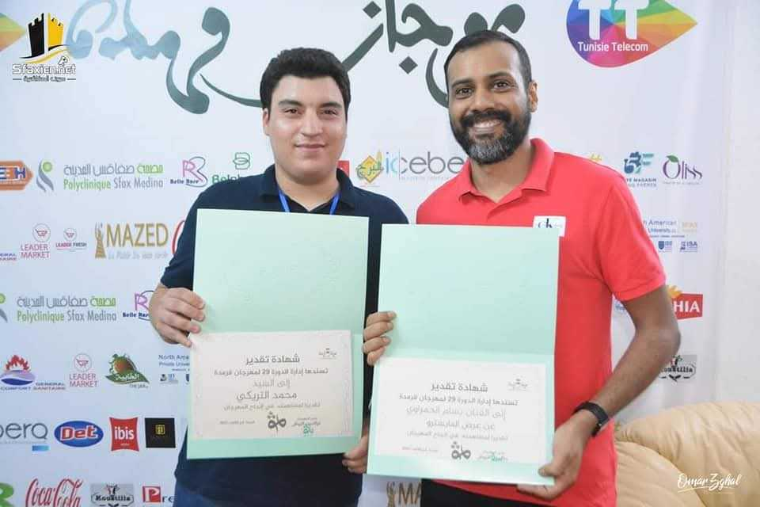
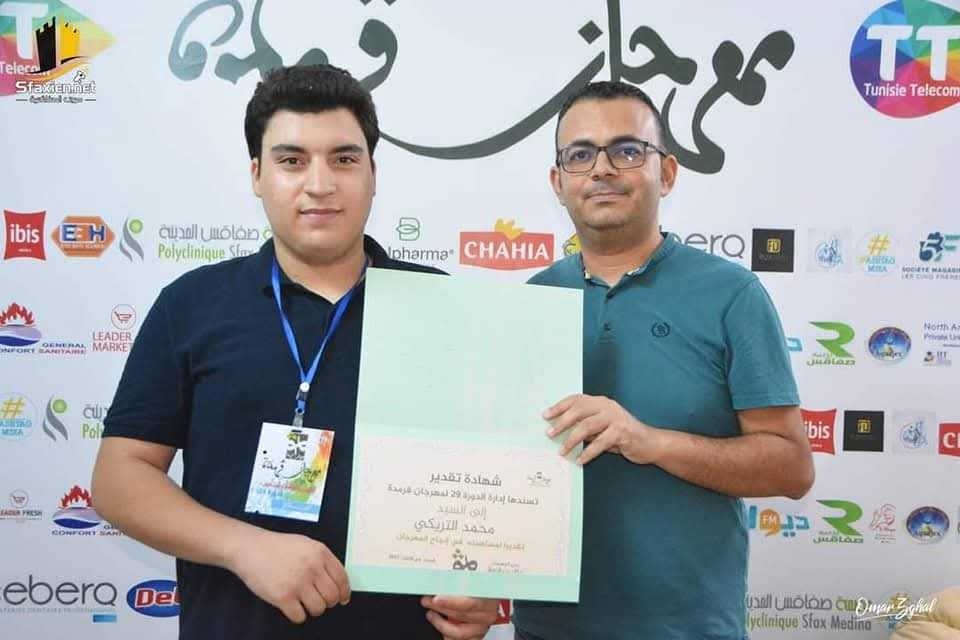
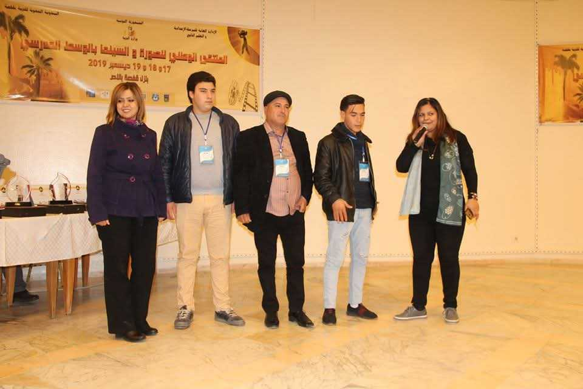
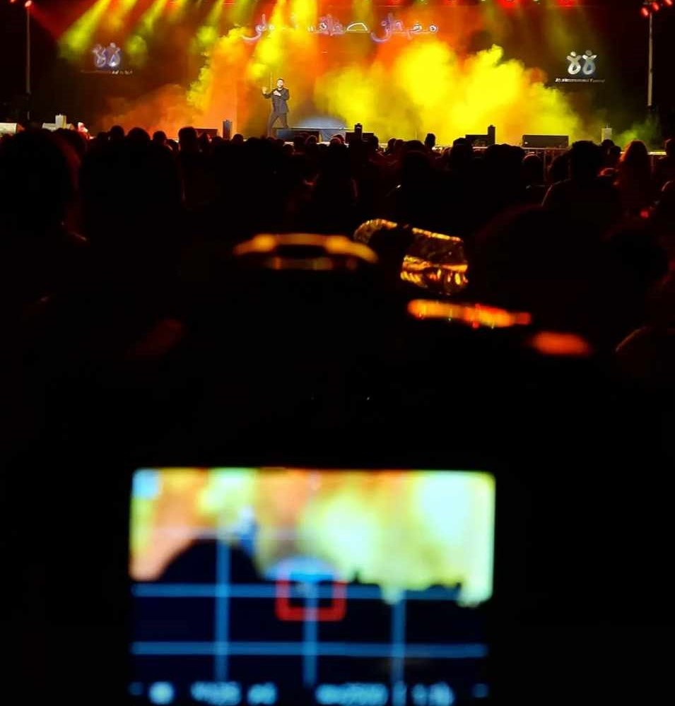
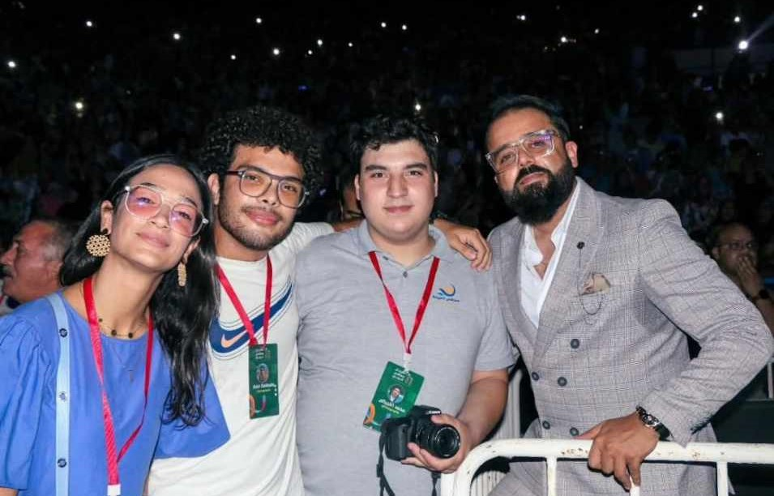
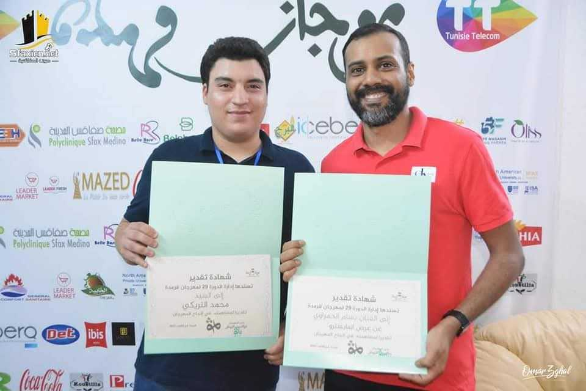
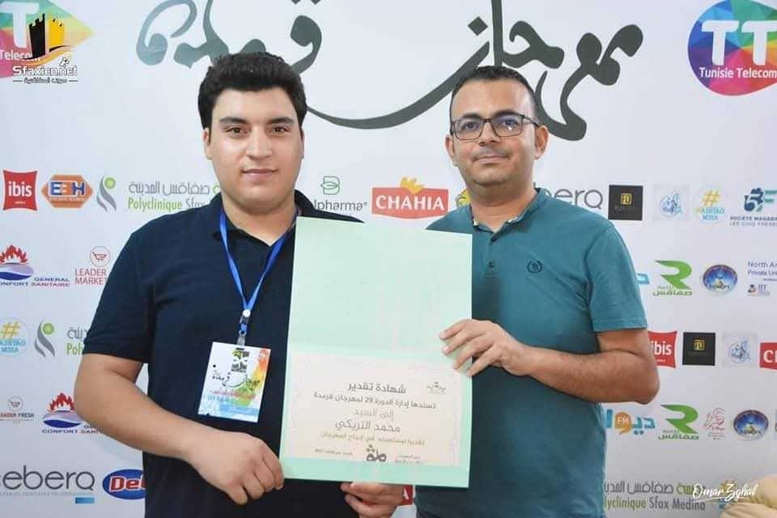
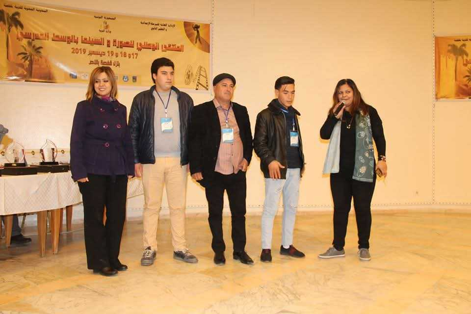

Mes passions
photographie est pour moi bien plus qu'une simple passion. Elle me permet de capturer des moments uniques, d'immortaliser des événements et de partager des histoires à travers mon objectif. J'ai eu la chance de participer à plusieurs festivals et compétitions où j'ai pu exprimer ma créativité et développer mes compétences. Découvrez ici quelques-unes de mes plus belles expériences en tant que photographe.
Voici quelques images :
Festival International de Sfax 2019 et 2023
En 2019, j'ai eu l'opportunité de participer au Festival International de Sfax en tant que photographe. Cet événement a été une expérience incroyable, où j'ai capturé des moments précieux et uniques.


Festival de Gremda 2023
En 2023, j'ai participé au Festival de Gremda, où j'ai pu photographier des artistes et des spectacles musicaux et théâtraux.


Prix Régional de Sfax 2020
En 2020, j'ai remporté le Prix Régional de Sfax en milieu scolaire pour mes photographies, une reconnaissance qui m'a encouragé à poursuivre ma passion et à perfectionner mes compétences.


Festival International de Sfax 2019 et 2023
En 2019, j'ai eu l'opportunité de participer au Festival International de Sfax en tant que photographe. Cet événement a été une expérience incroyable, où j'ai capturé des moments précieux et uniques.
 Festival de Gremda 2023
En 2023, j'ai participé au Festival de Gremda, où j'ai pu photographier des artistes et des spectacles musicaux et théâtraux.
 Prix Régional de Sfax 2020
En 2020, j'ai remporté le Prix Régional de Sfax en milieu scolaire pour mes photographies, une reconnaissance qui m'a encouragé à poursuivre ma passion et à perfectionner mes compétences.
